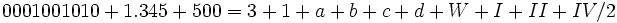

De: La Frikipedia, la enciclopedia extremadamente seria.
De: La Frikipedia, la enciclopedia extremadamente seria. De: La Frikipedia, la enciclopedia extremadamente seria.
FLA fue descubierto por Florentino Leandro Arnulfo y por Michael Jackson a principios de siglo. Este elemento es producido por la glandula sudoripara del wombat, causa mareos y gusto por la música de Alejandro Sanz ademas de ser el elemento previo al elemento GAY es decir:
1FLA2+1GAY = Luis Miguel
1GAY2+1GAY2 = Tu
Pero tras los últimos adelantos científicos en la investigación de este elemento se dio a conocer que hay una mutación de este elemento conocida como FLAY que al tener contacto con humanos crea a un ser abominable, tanto así que los canis le tienen miedo pues esta mutación genética duplica a ritmo acelerado el canismo convirtiendo a la madre Teresa de Calcuta en Britney Spears o en el caso mas avanzado en Aria Giovanni.
El elemento FLA se encuentra en los emos principalmente, pero necesita del elemento GAY para convertirlo en una ninfa de los bosques.

El resultado de toda suma matemática similar a esta, susituyendo bien sus literales por pavorreales y lechones o por belanova y moderatto, dará el resultado fla. La literal a tiene que ser dos veces mayor a la literal b, a menos que se trate del inframundo, la literal c es la suma de a+b más el doble producto que es inversamente proporcional al maravilloso número de fla. La W añade el factor que vuelve inexistente al elemento y los números romanos indican las ciencias de la tierra. Terminológicamente basándose en las proporciones correctas y leyes de la matera. Dicho y hecho este elemento no existe y no está en la tabla periódica, en las fuentes mencionadas anteriormente.
Para más información consulte álgebra con Baldor
Autor(es):